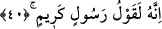

çok açık olduğu ve bu konuda yemin etmeye gerek bulunmadığı” gerekçesini dile
getirmişlerdir. Bâzı âlimlere göre “lâ uksimu” cümlesi iki cümledir. Birincisi; “lâ:
hayır” cümlesidir, ikincisi ise “uksimu: yemin ediyorum” cümlesidir. Buna göre birinci
cümlenin anlamı; “yalanlayanların söyledikleri sözler, doğru değildir. Çünkü onlar bâtıl
ve çürük sözlerdir”; ikinci cümlenin anlamı ise “o hâlde ben yemin ediyorum”
şeklindedir.
Gördükleriniz ve görmedikleriniz ifâdesine gelince; bu büyük bir yemindir. Çünkü
burada şümûl ve ihâta yoluyla dünyada ne varsa tümünün üzerine yemin edilmiş
olunuyor. Zira dünyada ne kadar nesne varsa mutlaka bu iki kısımdan birine dâhil olup
ya görülen ya da görülmeyen nesnedir. “Görülenler” dünyada müşâhede edilenler,
“görülmeyenler” ise gâib olanlardır. Dolayısıyla bu iki kavramın içine dünya, âhiret,
cisimler, ruhlar, insan, cin, mahlûkat, yaratıklar, zâhirî ve bâtinî nimetler ve bunların
dışında üzerlerine yemin edilmeye lâyık ne varsa tümü dâhildir. Zira eşya arasında
üzerine yemin edilmeye lâyık olmayan şeyler de vardır.
Kâşânî’nin ifâdesine göre; görülen ve görülmeyenden maksad gerek zâhir gerek bâtın
bütün varlık âlemidir. İbn Ata’ya göre; görülenden maksad Allah’ın kudretinin eserleri,
görülmeyenden maksad ise O’nun sırlarıdır. Şeyh Necmeddin’in ifâdesine göre;
görülenlerden maksad müşâhede olunanlar, zâhirî gözlerle görülüp hissedilenlerdir.
Görülmeyenlerden maksad ise ancak bâtinî gözlerle görülebilen gaybî şeylerdir ki
bunlar ismî ve zâti mazâhir (görüntüler)dir.
el-Huseyn’in açıklamasına göre; görülenler Allah’ın meleklerine gösterdikleri kalem
ve levh-i mahfuz gibi şeylerdir. Görülmeyenler ise bilgisini kendisine sakladığı,
hakkında kalemin oynamadığı şeylerdir ki bunları melekler de bilmezler.
Allah’ın yaratıklara göstermiş olduğu sıfatları, onlara göstermiş olduğu fiilleri ve
kendilerine açıkladığı bilgisi, kendi nefsine sakladıklarına oranla dünyaya ve âhirete
nisbetle bir zerre gibidir. Eğer Allah Teâlâ bilgisini kendisine sakladığı şeyleri ortaya
çıkaracak olsa, bütün yaratıklar, -onları taşımak bir yana- bunların karşısında erirlerdi.
Şeyh Ebû Talip el-Mekki (k.s.) Kutu’l-kulub isimli eserinde der ki: Herhangi bir kul
Allah’ı bilen, O’nu anlayan, O’nun sözlerine kulak veren ve O’nu müşâhede eden kimse
seviyesine yükseldiğinde Allah başkasına gâib olan şeyleri ona bildirir. Başkasının
görmediği şeyleri ona gösterir. Nitekim Allah, “gördüklerinize ve görmediklerinize
yemin ederim” buyuruyor.
40. Hiç şüphesiz o (Kur’an), çok şerefli bir elçinin sözüdür.
O elçinin sözü hak sözdür ve tıpkı Allah’ın söylediği söz gibidir. Çünkü bu elçi
“arzusuna göre konuşmaz.” (en-Necm, 53/3) Bir başka âyette de şöyle buyrulur: “Ve